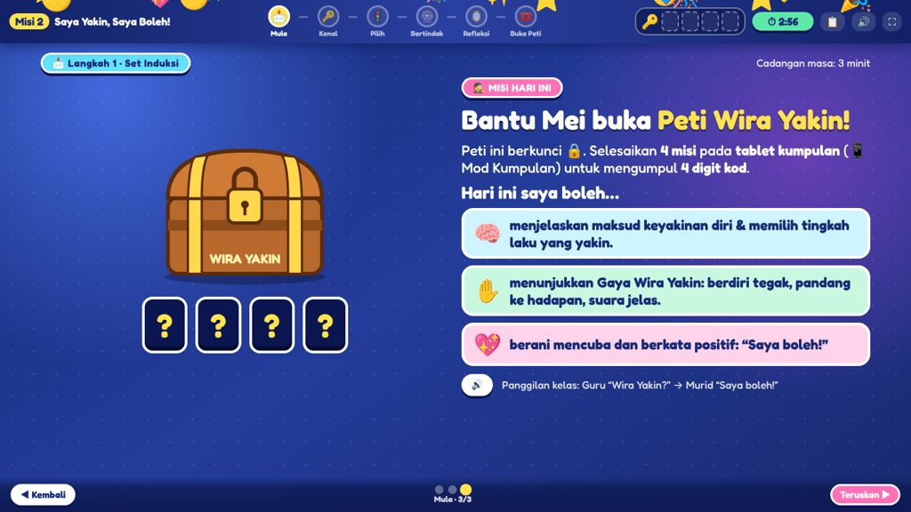
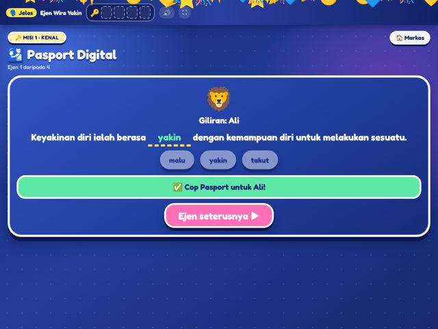
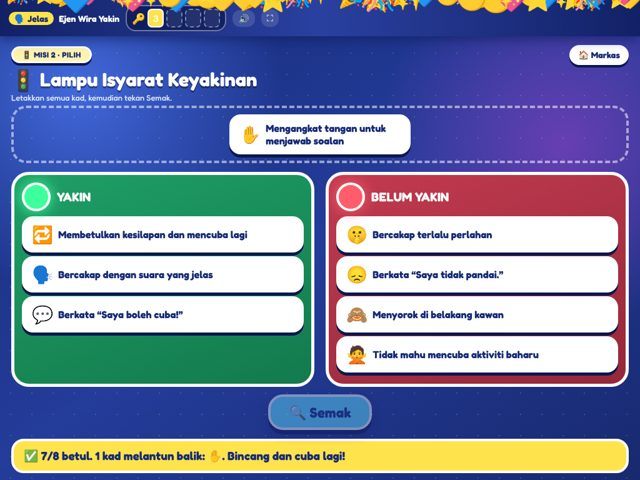
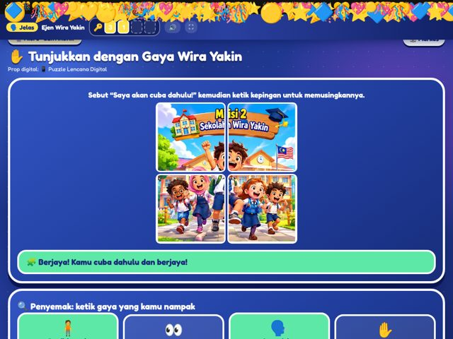

Kelas ditukar menjadi Bilik Rahsia Wira Yakin. Murid ialah ejen yang perlu membantu Mei, budak yang takut jawapannya salah. Setiap kumpulan memegang satu tablet (📱 Mod Kumpulan) yang berisi 4 misi digital. Setiap misi menyemak sendiri jawapan murid dan memberi 1 digit kod. Empat digit membuka Peti Wira Yakin di projektor (🖥️ Mod Guru), dan Lencana Digital terbuka di setiap tablet. Tiada bahan bercetak.
Mesej kepada pensyarah: “Saya tidak mengajar dari hadapan. Bahan yang mengajar; saya memudah cara.”
| Domain | Objektif (ringkas) | Bukti yang pensyarah nampak |
|---|---|---|
| 🧠 Kognitif | (i) Melengkapkan maksud keyakinan diri dalam Pasport Digital. (ii) Memilih tindakan yakin dengan betul ≥ 3/4 situasi Kad Cabaran (Kad Respons Digital A/B/C). | Pasport Digital setiap ejen; kad respons digital diangkat serentak |
| ✋ Psikomotor | Mendemonstrasikan Gaya Wira Yakin dengan prop digital di tablet, ≥ 3/4 elemen: tegak, pandang, suara jelas, tindakan yakin. | Aksi kumpulan di Pentas; senarai semak; Meter Suara |
| 💖 Afektif | Menunjukkan sikap berani mencuba: menawarkan diri untuk ≥ 1 peranan dan menaip azam “Saya boleh…”. | Peranan dipilih di tablet; azam di Dinding Kumpulan |
Strategi pengajaran lazimnya dibahagikan kepada tiga: berpusatkan guru, berpusatkan murid dan berpusatkan bahan. Dalam pendekatan berpusatkan bahan, bahan (BBM, sumber digital, kit, modul, kad tugasan) menjadi pusat interaksi. Murid belajar dengan berinteraksi secara langsung dengan bahan. Bahan menyampaikan isi, memberi arahan dan memberi maklum balas. Guru merancang dan menyediakan bahan, kemudian bertindak sebagai fasilitator dan pemerhati.
| Teori / model | Maksudnya untuk PdP Misi 2 |
|---|---|
| Model ASSURE (Smaldino et al., 2019) | Analisis murid (Tahun 3, pemalu, takut salah) → State objektif K/P/A → Select bahan (Kit Misi) → Utilize bahan (pratonton & latihan) → Require penyertaan murid (manipulasi, respons, demonstrasi) → Evaluate (senarai semak, refleksi). |
| Kon Pengalaman Dale (1969) | Murid 8–9 tahun belajar paling berkesan melalui pengalaman langsung dan dilakonkan: menyentuh dan menyusun kad digital, beraksi dengan tablet sebagai prop dan mendengar suara sendiri pada Meter Suara. Ini lebih berkesan daripada mendengar penerangan sahaja. |
| Bruner (1966): enaktif → ikonik → simbolik | Aksi Gaya Wira Yakin dengan prop digital (enaktif) → kad gambar & lampu isyarat (ikonik) → definisi dalam Pasport Digital (simbolik). |
| Montessori: kawalan kesilapan (Lillard, 2017) | Bahan digital menyemak sendiri: kad padanan bertukar warna jika betul, kad salah melantun balik, Pasport meminta “cuba lagi”, peti hanya terbuka dengan kod betul. Murid tidak bergantung kepada guru untuk tahu betul/salah. |
| Mosston & Ashworth (2008): Gaya B Latihan | Guru membuat keputusan pra-impak (isi, bahan, Kad Tugasan). Semasa impak, murid memutuskan susunan, kadar, peranan dan masa. Pasca-impak: guru memberi maklum balas individu & peribadi sambil bergerak. Kad Tugasan ialah alat utama gaya ini. |
| Bandura (1997): efikasi kendiri | Keyakinan dibina melalui pengalaman berjaya (cabaran kecil berjaya), model (demonstrasi guru & rakan), pujukan verbal (kata-kata positif) dan keadaan emosi (suasana permainan yang selamat). Keempat-empat sumber ini dibina ke dalam misi. |
| ✅ Betul-betul berpusatkan bahan | ❌ Kelihatan seperti bahan, tetapi sebenarnya berpusatkan guru |
|---|---|
| Bahan memberi arahan; murid boleh mula tanpa syarahan panjang. | Guru menerangkan setiap slaid; murid hanya melihat skrin. |
| Setiap kumpulan memegang bahan sendiri (tablet: Misi 1–4, Pasport Digital, Kad Respons Digital). | Hanya guru yang menyentuh BBM; murid menjawab secara lisan sahaja. |
| Bahan memberi maklum balas (warna, kad melantun, “cuba lagi”, kod, peti). | Hanya guru yang menentukan jawapan betul. |
| Murid membuat keputusan (peranan, susunan, kadar). | Semua serentak mengikut arahan guru langkah demi langkah. |
| Hasil murid menjadi bahan baharu (Papan Hasil → Gallery Walk; azam → Dinding Kelas). | Hasil murid tidak digunakan semula. |
| Tablet ialah bahan manipulatif di tangan murid. | Tablet hanya untuk menonton video atau slaid guru. |
Gunakan format ABCD (Mager, 1997): Audience (murid), Behaviour (kata kerja boleh diperhati), Condition (bahan/situasi), Degree (kriteria). Satu objektif = satu tingkah laku utama yang boleh diukur.
| Domain | Apa yang diukur | Kata kerja sesuai (Tahun 3) | Elakkan |
|---|---|---|---|
| 🧠 Kognitif Anderson & Krathwohl (2001) | Pengetahuan & pemikiran; boleh dinilai betul/salah. | menyatakan, menjelaskan, melengkapkan, memadankan, mengelaskan, memilih, memberi contoh | “mengetahui”, “memahami”, “menyedari” (tidak boleh diperhati) |
| ✋ Psikomotor Simpson (1972): persepsi → set → respons berpandu → mekanisme… | Pergerakan / kemahiran fizikal yang dilakukan dan diperhati dengan senarai semak. | mendemonstrasikan, memperagakan, melakukan, menunjukkan (postur, pergerakan), menggunakan (prop) | “menyebut”, “menulis jawapan” (itu kognitif/lisan); sekadar “memegang kad” |
| 💖 Afektif Krathwohl et al. (1964): menerima → bertindak balas → menghargai… | Sikap & nilai yang dibuktikan melalui tingkah laku sukarela; tidak dinilai betul/salah. | menawarkan diri secara sukarela, menunjukkan kesediaan, melafazkan ikrar, menyatakan komitmen/azam, menghargai (dengan bukti) | “menyatakan kepentingan…” (itu kognitif); “menghargai” tanpa tingkah laku yang boleh dilihat |
| ❌ Ditulis begini | ✅ Lebih tepat |
|---|---|
| P: Murid dapat menyebut kata-kata positif dengan kuat. | P: Murid dapat mendemonstrasikan Gaya Wira Yakin (berdiri tegak, memandang ke hadapan, suara jelas, tindakan dengan prop digital) dengan ≥ 3/4 elemen. |
| A: Murid dapat menyatakan kepentingan keyakinan diri. | A: Murid menunjukkan sikap berani mencuba dengan menawarkan diri secara sukarela untuk ≥ 1 peranan dan menaip 1 azam “Saya boleh…”. |
| K: Murid dapat memahami maksud keyakinan diri. | K: Murid dapat menjelaskan maksud keyakinan diri dengan melengkapkan ayat definisi dalam Pasport Digital dengan betul. |
| Tiada kriteria: “memilih tindakan yang betul”. | Tambah D: “… bagi sekurang-kurangnya 3 daripada 4 situasi”. |
| Objektif tiada dalam aktiviti/pentaksiran. | Setiap objektif ada langkah, bahan dan instrumen (lihat Jadual Penjajaran Konstruktif dalam RPH). |
“Psikomotor dalam PK ialah kemahiran kesihatan yang diamalkan secara fizikal. Untuk SP 3.1.2 mengaplikasikan cara meningkatkan keyakinan diri, murid mendemonstrasikan bahasa badan yakin: postur tegak, kontak mata, suara jelas dan tindakan dengan tablet sebagai prop. Saya menilainya dengan senarai semak 4 elemen pada aras respons berpandu Simpson, kerana murid meniru demonstrasi saya dahulu.”
Tujuannya supaya pensyarah merasai PdP ini sebagai pengalaman, bukan pembentangan. Pilih sekurang-kurangnya 6 idea di bawah.
| Idea | Cara melaksanakan | Kesan |
|---|---|---|
| 🎬 Pembukaan senyap (cold open) | Jangan mula dengan “Assalamualaikum murid-murid…”. Lampu separuh malap, projektor memaparkan Peti Wira Yakin berkunci dan sampul “Mesej Rahsia”. Pada masa yang sama, keempat-empat tablet kumpulan sudah terbuka di skrin Markas. Anda masuk perlahan dan berbisik: “Ejen-ejen… kita ada kecemasan.” Barulah memberi salam. | Perhatian 100% dalam 10 saat pertama |
| 🕵️ Guru dalam watak Ketua Ejen | Pakai kot/jaket gelap, cermin mata hitam atau lanyard “KETUA EJEN”. Pegang walkie-talkie mainan (atau telefon) sebagai “alat komunikasi markas”. | Pensyarah nampak kreativiti watak |
| 🪪 Daftar Ejen + tetamu VIP | Setiap rakan menaip nama sendiri di tablet kumpulan (Daftar Ejen). Sambut pensyarah sebagai “Pengarah Agensi” dan jemput beliau memutar Roda Cabaran pertama atau menekan digit terakhir pada papan kekunci peti. | Pensyarah turut terlibat; sangat diingati |
| 📱 Tablet = bahan ajaib | Tablet berubah peranan dalam setiap misi: kad padanan → Pasport → papan lampu isyarat → mikrofon (Meter Suara) → Kad Bacaan → puzzle → Lencana Digital. Tunjukkan perubahan ini kepada pensyarah: “Satu bahan, tujuh fungsi.” | Bukti kuat berpusatkan bahan |
| 🧒 Mei bercakap | Mei beranimasi dan bercakap melalui TTS. Wajahnya bertukar daripada risau kepada yakin selepas kelas menjawab. Di akhir, ulang suara Mei: “Terima kasih, Wira Yakin! Sekarang saya berani!” | Watak menyatukan cerita |
| 🎙️ Meter Suara langsung | Benarkan mikrofon. Apabila kelas menyebut ayat positif, bar bergerak dan bintang terisi. Cabar: “Bolehkah kita isi bintang dengan suara JELAS, bukan menjerit?” | Psikomotor kelihatan & boleh diukur |
| 🪞 Cermin Ajaib (kamera) | Murid sukarela melihat dirinya dalam bingkai emas bermahkota “WIRA YAKIN DIRI” sambil berkata “Saya yakin, saya boleh!”. Tiada rakaman disimpan. | Momen emosi (afektif) |
| ⭐ Dinding Kumpulan ➜ Dinding Kelas | Setiap ejen menaip azam di tablet. Wakil membacanya kuat dan anda menampalnya di Dinding Kelas pada projektor, jadi bintang “muncul” satu demi satu. Jika ada Padlet, paparkan kod QR Padlet di 📲 Sambung Peranti. | Hasil visual yang cantik untuk gambar |
| 🎵 Reka bunyi | BBM sudah ada bunyi kira detik, kunci dan fanfara. Gunakan pembesar suara Bluetooth kecil. | Tenaga permainan |
| 🏁 Penamat sinematik | Selepas peti terbuka: semua berdiri, tangan di dada, Ikrar Wira Yakin (karaoke di skrin). Tunjukkan Lencana Digital di tablet kepada pensyarah: “Encik juga Wira Yakin!” | Penutup sosial yang kuat |
| Masa | Skrin / klik | Anda sebut (contoh) | Murid buat · bahan |
|---|---|---|---|
| 0:00 | Mula → Mesej (klik sampul) | “Ejen-ejen, markas terima mesej rahsia. Jom buka!” (Mei bercakap) | Mendengar; tablet di skrin Markas |
| 1:00 | Soalan Mei → Kira 3-2-1 → Semak | “Patutkah Mei mencuba? Fikir 5 saat… Kira 3-2-1, angkat kad!” → “Kenapa A? Siapa nak kongsi?” | Angkat Kad Respons Digital A/B; 2 murid memberi sebab |
| 2:00 | Misi Hari Ini | “Peti ini hanya terbuka dengan 4 kod. Hari ini kamu boleh… (baca 3 kriteria). Wira Yakin?” → “Saya boleh!” | Panggilan kelas |
| 3:00 | Kenal: Sebut bersama | “Ikut cahaya kuning, sebut bersama-sama.” → “Sekejap lagi, setiap ejen akan isi Pasport Digital.” | Sebut ×2 |
| 4:00 | Kad Tugasan 1 → ▶ Mula | “Buka Misi 1 di tablet. Pilih peranan sendiri. Kad Tugasan beritahu apa nak buat. Masa 2½ minit!” (anda bergerak ke setiap tablet) | Peranan, padanan, Pasport Digital · Tablet Misi 1 |
| 6:00 | Semak padanan | “Wakil Kumpulan Jelas, tunjukkan padanan kamu di skrin.” → “Mengapa keyakinan diri penting?” | Wakil klik; soal jawab |
| 7:30 | Kod 1 → Simpan Kunci | “Kod pertama! Adakah tablet kumpulan kamu menunjukkan nombor yang sama?” | Kod di Markas tablet |
| 8:00 | Kad Tugasan 2 → ▶ Mula | “Misi 2: lampu hijau YAKIN, lampu merah BELUM YAKIN. Tekan Semak! 2½ minit.” | Asingkan 8 kad, ubah merah ➜ hijau · Tablet Misi 2 |
| 10:30 | Gallery Walk → ▶ | “Bangun, bergerak ikut arah jam ke tablet kawan. Tekan ⭐ dan beri pujian!” | Bergerak · ⭐ & emoji di Papan Hasil |
| 11:30 | Semak bersama + Kuiz Kilat | “Kad ‘Saya tidak pandai’, lampu apa? Bagaimana ubah jadi hijau?” → Kira 3-2-1 untuk 2 soalan | Wakil klik; Kad Respons Digital |
| 14:30 | Kod 2 | “Kod kedua dijumpai!” | Kod di Markas tablet |
| 15:00 | Gaya Wira Yakin + Meter Suara | “Semua bangun! Berdiri tegak… pandang ke hadapan… suara jelas… angkat tangan! Sekarang sebut: Saya yakin, saya boleh!” | Tiru 4 gaya · Poster Gaya |
| 16:30 | Roda → PUTAR (pensyarah?) | “Encik Pengarah, sudi putar roda pertama?” → Fikir & Pilih → Tunjukkan → Sebut (×4 cabaran, ±2 minit setiap satu) | Kad Respons Digital; kumpulan beraksi dengan prop digital · Tablet Misi 3 |
| 24:30 | Ambil Kod 3 | “Semua kumpulan dah jadi Wira!” | Kod di Markas tablet |
| 25:00 | Cermin Ajaib | “Siapa berani berdiri di depan Cermin Ajaib?” (2 murid sukarela) | Sebut azam di cermin |
| 26:00 | Dinding Saya Boleh | “Buka Misi 4. Setiap ejen taip satu ‘Saya boleh…’. Wakil, baca satu untuk kelas!” (taip 2–3 di Dinding Kelas) | Dinding Kumpulan & Meter · Tablet Misi 4 |
| 27:30 | Meter → Rumusan → Dedahkan | “Keyakinan diri ialah berasa…?” “YAKIN!” “Kunci mana kamu guna hari ini?” | Lengkapkan definisi |
| 28:30 | Kod 4 → Peti (papan kekunci) | “Setiap kumpulan, baca satu digit dari Markas! Encik Pengarah, tekan digit terakhir?” | Masukkan kod · Peti digital |
| 29:30 | Tahniah → Ikrar | “Tangan di dada, lafaz bersama…” + Cabaran Minggu Ini | Lencana Digital di tablet · ikrar |
| Peranti / tetapan | Kuantiti |
|---|---|
| Komputer riba + projektor/TV + HDMI (🖥️ Mod Guru) | 1 |
| Tablet / Chromebook / telefon kumpulan (📱 Mod Kumpulan), dicas penuh | 4 |
| Telefon murid untuk 🅰️ Kad Respons Digital (pilihan) | 1 / murid |
| Pembesar suara (bunyi & TTS) | 1 |
| Mikrofon & kamera komputer riba dibenarkan | — |
| Pengklik pembentangan (pilihan) | 1 |
| Fail Misi2_Saya_Yakin_Saya_Boleh.html di setiap peranti, atau pautan itch.io/Drive + kod QR | — |
| Salinan sandaran fail pada pemacu USB | 1 |
| Isyarat | Respons murid |
|---|---|
| “Wira Yakin?” | “Saya boleh!” + diam & pandang guru |
| “Kira 3-2-1” | Angkat kad serentak |
| Pemasa cincin bertukar merah | Tangan di atas kepala: berhenti |
| Bunyi fanfara | Misi tamat, kembali ke tempat |
| “Skrin ke atas!” | Tablet diletak rata, mata ke guru |
| Jika… | Tindakan |
|---|---|
| Projektor/HDMI tidak berfungsi | Kumpulan meneruskan Misi 1–4 di tablet (bahan utama berada di tangan murid). Anda memandu kelas dengan membaca Kad Tugasan dan situasi daripada tablet anda sendiri. Ini membuktikan pendekatan berpusatkan bahan. |
| Tablet tidak cukup / habis bateri | Kongsi 1 tablet bagi 2 kumpulan, gunakan telefon rakan, atau jalankan misi di projektor dengan wakil bergilir. |
| Tiada internet | Tiada masalah. BBM ialah fail HTML luar talian (fon & gambar terbenam). |
| Mikrofon/kamera disekat | Butang Isi manual pada Meter Suara; Cermin Ajaib dilangkau atau murid bercakap di hadapan kelas. |
| Suara TTS tiada bahasa Melayu | BBM guna suara Indonesia jika ada. Jika tidak, matikan TTS di Persediaan dan baca sendiri (atau minta murid membaca). |
| Masa terlewat 2–3 minit | Kurangkan Roda Cabaran kepada 3 cabaran (klik cip terus); Kuiz Kilat 1 soalan sahaja; Cermin Ajaib 1 murid. |
| Kod peti salah / tablet ditetapkan kod lain | Butang 💡 Bantuan guru pada skrin peti memaparkan kod. Pastikan kod sama pada semua peranti (Persediaan Guru). |
| Rakan “murid” terlalu senyap | Gunakan panggilan “Wira Yakin? – Saya boleh!” dan Meter Suara sebagai cabaran kelas. |
| Langkah | Kekalkan | Ringkaskan / langkau |
|---|---|---|
| Mula (2 min) | Mesej Mei, Kad A/B, misi peti | Bacaan kriteria (tunjuk sahaja) |
| Kenal (3 min) | Sebut definisi ×1, Misi 1 di tablet (90 s) | Flip card, soalan kepentingan |
| Pilih (3 min) | Misi 2 di tablet (90 s) + semak skrin | Gallery Walk, Kuiz Kilat |
| Bertindak (5 min) | Gaya Wira Yakin + 2 cabaran (pensyarah putar roda) | Cabaran 3 & 4 |
| Refleksi (2 min) | Misi 4 (azam) + rumusan + buka peti + ikrar | Cermin Ajaib, Meter Keyakinan |
Kerana bahan yang memandu isi, arahan dan maklum balas: Kad Tugasan Digital, padanan semak-sendiri, Lampu Isyarat, Kad Cabaran dan peti. Tablet di tangan murid ialah bahan manipulatif, bukan alat tontonan. Murid aktif, tetapi aktiviti mereka distruktur oleh bahan (Gaya B). Dalam berpusatkan murid, murid sendiri menjana soalan dan kandungan (contohnya inkuiri), dan itu bukan fokus PdP ini.
Saya membuat keputusan pra-impak. Semasa Misi 1–4 di tablet, murid membuat keputusan sendiri tentang peranan, susunan, kadar dan masa, berpandukan Kad Tugasan. Saya bergerak memberi maklum balas individu dan peribadi.
Melalui tingkah laku sukarela yang boleh diperhati: menawarkan diri untuk peranan (A1) dan menaip azam di Dinding Kumpulan (A2), direkod automatik dalam Rekod Kumpulan dan senarai semak. Meter Keyakinan ialah persepsi kendiri, tidak dinilai betul/salah, tetapi digunakan untuk refleksi saya.
Ya, menyebut sahaja tidak cukup. Sebab itu objektif psikomotor saya ialah mendemonstrasikan bahasa badan yakin (postur, kontak mata, suara pada zon jelas, tindakan dengan tablet sebagai prop), dan afektif saya diukur melalui tindakan sukarela.
K(i) → SP 3.1.1, TP1. K(ii) dan P → SP 3.1.2 “mengaplikasikan”, TP2–TP4. Pengayaan → TP5–TP6. Lihat Jadual Penjajaran Konstruktif dalam RPH.
BBM yang sama berfungsi pada telefon, Chromebook DELIMa atau sebuah komputer. Kumpulan boleh berkongsi peranti secara bergilir, atau misi kumpulan dijalankan di skrin hadapan dengan wakil bergilir. Fail berfungsi tanpa internet.
Lemah: arahan bergambar, TTS, rakan sebaya, peranan selamat, Lampu Isyarat yang memberi petunjuk apabila salah. Cemerlang: Mentor Wira (TP5) dan “Saya istimewa kerana…” di Cermin Ajaib (TP6).
Kebergantungan pada peranti dan bateri (diatasi dengan fail luar talian, sandaran USB dan perkongsian peranti), murid terlalu fokus pada skrin (peraturan “skrin ke atas!”), risiko murid terlalu teruja (panggilan kelas & pemasa), dan kebergantungan pada teknologi (pelan kontingensi luar talian).
| Aspek | Ya | Belum |
|---|---|---|
| Saya boleh menerangkan maksud pendekatan berpusatkan bahan dalam 2 ayat. | ☐ | ☐ |
| Saya hafal 3 objektif (K, P, A) dan kriterianya. | ☐ | ☐ |
| Kod peti & nama kumpulan sama pada projektor dan semua tablet. | ☐ | ☐ |
| 4 tablet dicas penuh, BBM terbuka di skrin “Pilih kumpulan”, data lama dipadam. | ☐ | ☐ |
| Kod QR / pautan BBM sedia untuk telefon rakan (Kad Respons Digital). | ☐ | ☐ |
| Saya sudah mencuba Misi 3 bagi keempat-empat cabaran (mikrofon, Kad Bacaan, puzzle, Papan Hasil). | ☐ | ☐ |
| BBM diuji pada laptop sebenar: bunyi, mikrofon, kamera, skrin penuh. | ☐ | ☐ |
| Saya sudah berlatih pembukaan senyap dan watak Ketua Ejen. | ☐ | ☐ |
| Saya tahu bila mengarahkan kumpulan membuka Misi 1–4. | ☐ | ☐ |
| Saya sudah berlatih tanpa projektor dan dengan tablet yang kurang (kontingensi). | ☐ | ☐ |
| Saya ada salinan RPH bercetak untuk pensyarah, dengan Bahagian D (ulasan pensyarah) kosong. | ☐ | ☐ |


